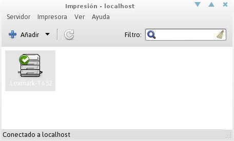

Impresoras
De Huayra
  Impresora Predeterminada
Impresora Predeterminada
{kind=link}
Aprendé a configurar tu impresora, a agregar una nueva, cambiar los ajustes y mucho más.
- Configurar una impresora local
- Tu sistema puede reconocer automáticamente varios tipos de impresoras cuando se conectan. La mayoría de las impresoras se conectan al equipo con un cable USB.
- Asegurate que la impresora está encendida.
- Conectá la impresora a tu sistema mediante el cable apropiado. Podés ver la actividad en la pantalla, cuando el sistema busca los controladores, y puede que se pida que se autentique para instalarlos.
- Aparecerá un mensaje cuando el sistema haya terminado de instalar la impresora. Seleccioná Imprimir una página de prueba para imprimir una página de prueba, o Configurar para hacer cambios adicionales en la configuración de la impresora.
Si tu impresora no se estableció de manera automática, podés añadirla en la configuración de impresora.
- Pulsá en Icono de Configuración del sistema en el Panel Superior a la derecha.
- Pulsá Impresoras.
- Pulsá el botón Desbloquear en la esquina superior derecha e introducí tu contraseña.
- Pulsá el botón +.
- En la ventana emergente, seleccioná Local en la izquierda y tu impresora nueva en la derecha. Pulsá Añadir.
Si tu impresora no aparece en el menú emergente Añadir impresora, puede que necesites instalar los controladores de la impresora. Después de instalar la impresora puede que quieras cambiar tu impresora predeterminada. Sigue las indicaciones a continuación para poder hacerlo.
- Establecer la impresora predeterminada
- Si tenés más de una impresora disponible, podés seleccionar la que será tu impresora predeterminada. Es posible que quieras elegir la impresora que usás con más frecuencia.
- Necesitás privilegios de administrador del sistema para establecer la impresora predeterminada.
- Pulsá en Icono de Configuración del sistema en el Panel Superior a la derecha.
- Pulsá Impresoras.
- Seleccioná la impresora predeterminada de la lista de impresoras disponibles.
- Pulsá el botón Desbloquear en la esquina superior derecha e introduce tu contraseña.
- Seleccioná la opción Predeterminada.
Al imprimir en una aplicación, la impresora predeterminada se utiliza automáticamente, a menos que elijas una impresora diferente para esta salida específica. 

- ¿Cómo puedo comprobar los niveles de tinta o tóner de mi impresora?
- Cómo comprobar cuánta tinta o tóner queda en tu impresora, depende del modelo y fabricante de tu impresora y de los controladores y aplicaciones instaladas en tu equipo.
- Algunas impresoras tienen una pantalla empotrada para mostrar los niveles de tinta y otra información.
- Los controladores y herramientas de estado para la mayoría de las impresoras de HP los proporciona el proyecto imagen e impresióin en Linux de HP ("HP Linux Imaging and Printing", HPLIP). Otros fabricantes pueden proporcionar controladores propietarios con características similares.
- Alternativamente, podés instalar una aplicación para comprobar o monitorizar los niveles de tinta. Inkblot muestra el estado de la tinta para la mayoría de las impresoras HP, Epson y Canon. Comprobá si tu impresora está en la lista de modelos soportados. Otra aplicación de niveles de tinta para Epson y algunas otras impresoras es mktink.
Algunas impresoras aún no están muy bien soportadas en GNU/Linux y otras no están diseñadas para informar de sus niveles de tinta.
- Cambiar el tamaño del papel al imprimir
- Si querés cambiar el tamaño de papel del documento (por ejemplo, imprimir un PDF de tamaño carta americana en papel A4), podés cambiar el formato de impresión para el documento:
- Pulsá Archivo / Imprimir.
- Seleccioná la pestaña Configuración de página.
- Bajo la columna Papel, seleccioná su Tamaño de papel de la lista desplegable.
- Pulsá Print y tu documento debería imprimirse.
También podés usar el menú Orientación para elegir una orientación diferente:
- Vertical
- Apaisado
- Retrato invertido
- Apaisado invertido
- Hacer que las páginas se impriman en diferente orden
- Inverso
- La impresoras normalmente imprimen la primera página primero y la última página al final, así que las páginas se recogen en orden inverso. Si es necesario, podés revertir este orden de impresión.
- Para invertir el orden:
- Pulsá Archivo / Imprimir.
- En la pestaña General de la ventana de impresión, en Copias, seleccioná Invertir. La última página se imprimirá primero, y así sucesivamente.
- Clasificar
- Si vas a imprimir más de una copia del documento, los impresos se pueden agrupar por número de página de manera predeterminada (es decir, sacar todas las copias de la página uno, a continuación las copias de la página dos, y así sucesivamente). Clasificar hará que cada copia salga con sus páginas agrupadas en el orden correcto:
- Pulsá Archivo / Imprimir.
- En la pestaña General de la ventana de impresión, en Copias seleccioná Clasificar.
- Imprimir diseños de páginas múltiples y a doble cara
- Para imprimir en ambas caras de cada hoja de papel:
- Pulsá Archivo / Imprimir.
- Andá a la pestaña Configurar página de la ventana de impresión y elegí una opción de la lista desplegable Doble cara. Si la opción está desactivada, entonces tu impresora no permite impresión a doble cara. Las impresoras manejan la impresión a doble cara de diferentes maneras. Es buena idea experimentar con tu impresora para ver cómo trabaja.
- También podés imprimir más de una página del documento por cada cara del papel. Usá la opción Páginas por cara para hacer esto.
Disponibilidad
La disponibilidad de estas opciones puede depender del tipo de impresora que tengas, así como de la aplicación que estés usando. Esta opción puede no estar siempre disponible.
- Imprimir sobres y etiquetas
- La mayoría de las impresoras te permiten imprimir directamente en un sobre o en una hoja de etiquetas. Esto es especialmente útil si tenés que enviar muchas cartas, por ejemplo.
- Imprimir en sobres
- Hay dos cosas que hay que comprobar cuando se trata de imprimir en un sobre. La primera es que la impresora sabe de qué tamaño es el sobre. Después de pulsar Imprimir y de aparecer la ventana de impresión, andá a Configurar página y elegí el Tipo de papel como "sobre" si es posible. Si no podés hacer esto, fijate si se puede cambiar el Tamaño de papel a un tamaño de sobre (por ejemplo, "C5"). El paquete de sobres dirá de qué tamaño son; la mayoría de los sobres vienen en tamaños estándar.
- En segundo lugar, es necesario asegurarse de que los sobres se cargan del lado adecuado en la bandeja de la impresora. Consultá el manual de la impresora para esto, o tratá de imprimir un sobre y comprobar de qué lado está impreso para ver qué manera es la correcta.
- Algunas impresoras no están diseñadas para imprimir sobres, especialmente algunas impresoras láser. Consultá el manual de tu impresora para ver si acepta sobres, de lo contrario, podrías dañar la impresora al introducir un sobre.
- Imprimir sólo ciertas páginas
- Para imprimir sólo ciertas páginas del documento:
- Pulsá Archivo / Imprimir.
- En la pestaña General, en la ventana Imprimir, elegí Páginas de la sección Rango'.
- Escribí los números de las páginas que deseás imprimir en el cuadro de texto, separados por comas. Usá un guión para indicar un rango de páginas.
Por ejemplo, si escribís "1,3,5-7,9" en la caja de texto Páginas, se imprimirán las páginas 1,3,5,6,7.
- Imprimir un folleto
- Podés imprimir un folleto de un PDF:
- Si querés imprimir un folleto desde un documento de LibreOffice, tendrás que exportarlo primero a PDF eligiendo Archivo / Exportar como PDF.... Tu documento debe tener un número de páginas múltiplo de 4 (4, 8, 12, 16,...). Es posible que tengas que añadir hasta 3 páginas en blanco.
- Si el número de páginas de tu documento PDF no es múltiplo de 4, debés añadir el número de páginas en blanco adecuado (1, 2 o 3) para que sea múltiplo de 4. Para hacerlo, puede:
- Creá un documento de LibreOffice con el número de páginas en blanco (1-3) que necesites.
- Exportá las páginas en blanco a un archivo PDF eligiendo Archivo / Exportar como PDF....
- Mezclá las páginas en blanco con su documento PDF usando PDF-Shuffler o PDF Mod, colocando las páginas en blanco al final.
- Imprimir folletos plegados
- Podés hacer folletos plegados (como un pequeño libro o panfleto) mediante la impresión de páginas de un documento en un orden especial y cambiando un par de opciones de impresión.
- Estas instrucciones son para imprimir un folleto a partir de un documento PDF.
- Si querés imprimir un folleto desde un documento de LibreOffice, tendrás que exportarlo primero a PDF eligiendo Archivo / Exportar como PDF.... Tu documento debe tener un número de páginas múltiplo de 4 (4, 8, 12, 16,...). Es posible que tengas que añadir hasta 3 páginas en blanco.
- Para imprimir un folleto:
- Pulsá Archivo / Imprimir.
- Andá a la pestaña General. Bajo Rango, seleccioná Páginas.
- Escribí los números de las páginas en este orden (n es el número total de páginas, múltiplo de 4): n, 1, 2, n-1, n-2, 3, 4, n-3, n-4, 5, 6, n-5, n-6, 7, 8, n-7, n-8, 9, 10, n-9, n-10, 11, 12, n-11... Ejemplos: Folleto de 4 páginas: escribí 4,1,2,3 Folleto de 8 páginas: escribí 8,1,2,7,6,3,4,5 Folleto de 20 páginas: escribí 20,1,2,19,18,3,4,17,16,5,6,15,14,7,8,13,12,9,10,11
- Ahora, andá a la pestaña Configuración de página. En Disposición, en la opción Doble cara, seleccioná Borde corto (voltear). En la opción Páginas por cara seleccione 2. En el menúOrdenación de páginas, elegí De izquierda a derecha.
- Pulsá Imprimir.
- Imprimir un folleto en una impresora de una sola cara
- Estas instrucciones son para imprimir un folleto a partir de un documento PDF. Si querés imprimir un folleto desde un documento de LibreOffice, tendrás que exportarlo primero a PDF eligiendo Archivo / Exportar como PDF.... Tu documento debe tener un número de páginas múltiplo de 4 (4, 8, 12, 16,...). Es posible que tengas que añadir hasta 3 páginas en blanco.
- Para imprimir:
- Pulsá Archivo / Imprimir.
- Elegí la pestaña General. En Rango, elegí Páginas.
- Escribí los números de las páginas en este orden (n es el número total de páginas, múltiplo de 4): n, 1, 2, n-1, n-2, 3, 4, n-3, n-4, 5, 6, n-5, n-6, 7, 8, n-7, n-8, 9, 10, n-9, n-10, 11, 12, n-11... ...hasta que haya escrito todas las páginas. Ejemplos: Folleto de 4 páginas: escribí 4,1,2,3 Folleto de 8 páginas: escriba 8,1,2,7,6,3,4,5 Folleto de 12 páginas: escribí 12,1,2,11,10,3,4,9,8,5,6,7 Folleto de 16 páginas: escribí 16,1,2,15,14,3,4,13,12,5,6,11,10,7,8,9 Folleto de 20 páginas: escribí 20,1,2,19,18,3,4,17,16,5,6,15,14,7,8,13,12,9,10,11
- Seleccioná la pestaña Configuración de página. En Disposición, en el menú Doble cara seleccioná Una cara. En el menú Páginas por cara, elija 2. En el menú Ordenación de páginas, elegí De izquierda a derecha. En el menú Solo imprimir, elegí Páginas impares.
- Pulsá Imprimir.
- Cuando todas las páginas estén impresas, dé la vuelta a las páginas y colócalas en la impresora.
- Pulsá Archivo / Imprimir.
- Seleccioná la pestaña Configuración de página. En el menú Solo imprimir, elegí Páginas pares.
- Pulsá Imprimir.
- Problemas de impresión
- Arreglar un atasco de papel
- A veces, las impresoras alimentan de forma incorrecta las hojas de papel y se atascan.
- El manual de tu impresora, por lo general, te dará instrucciones detalladas sobre cómo solucionar los atascos de papel. Por lo general, tendrás que abrir uno de los paneles de la impresora para encontrar el atasco en el interior y luego con firmeza (pero con cuidado) sacar el papel atascado del mecanismo de alimentación de la impresora.
- Una vez que el atasco se ha arreglado es posible que tengas que pulsar el botón Reanudar para empezar a imprimir de nuevo. Con algunas impresoras, puede que incluso sea necesario apagar y volver a encender la impresora, y luego iniciar el trabajo de impresión otra vez.
- Cancelar un trabajo de impresión
- Si accidentalmente empezás a imprimir un documento, podés cancelar la impresión rápidamente para no gastar la tinta o el papel. Pulsá en el icono de la impresora en la barra superior y luego pulsá en Cancelar.
- Si esto no cancela la impresión como esperabas, intentalo pulsando el botón 'Cancelar de tu impresora.
- Como último recurso, especialmente si tenés un trabajo de impresión grande con muchas páginas que no se cancelan, retirá el papel de la bandeja de papel de la impresora. La impresora debe darse cuenta de que no hay papel y dejará de imprimir. A continuación, podés tratar de cancelar el trabajo de impresión, o intentar apagar la impresora y volver a encenderla.
Tené cuidado de no dañar la impresora al extraer el papel, aunque tenés que tirar con fuerza del papel para extraerlo, quizá sería preferible dejarlo donde está.
- ¿Por qué la impresión es poco uniforme...?
- Si tus impresiones son poco uniformes, están desvanecidas o tienen líneas que no deberían tener o son de calidad pobre, puede ser debido a un problema con la impresora o falta de tinta o tóner.
- Imágenes o texto desvanecidos puede que se esté quedando sin tinta o tóner. Comprobá el nivel de tinta o tóner y comprá un cartucho nuevo si es necesario.
- Rayas y líneas. Si tenés una impresión de inyección de tinta, el cabezal de impresión puede estar sucio o bloqueado parcialmente. Probá con limpiarlo (consultá el manual de instrucciones de la impresora).
- Colores incorrectos. Puede que la impresora se haya quedado sin tinta o tóner de un color. Comprobá su suministro de tinta/tóner y comprá un cartucho nuevo si es necesario.
- Bordes escalonados o líneas que no son rectas. Si las líneas en la impresión de que deben ser rectas resultan irregulares, es posible que necesites alinear el cabezal de impresión. Consultá el manual de instrucciones de la impresora para obtener detalles sobre cómo hacer esto.
- Para imprimir: